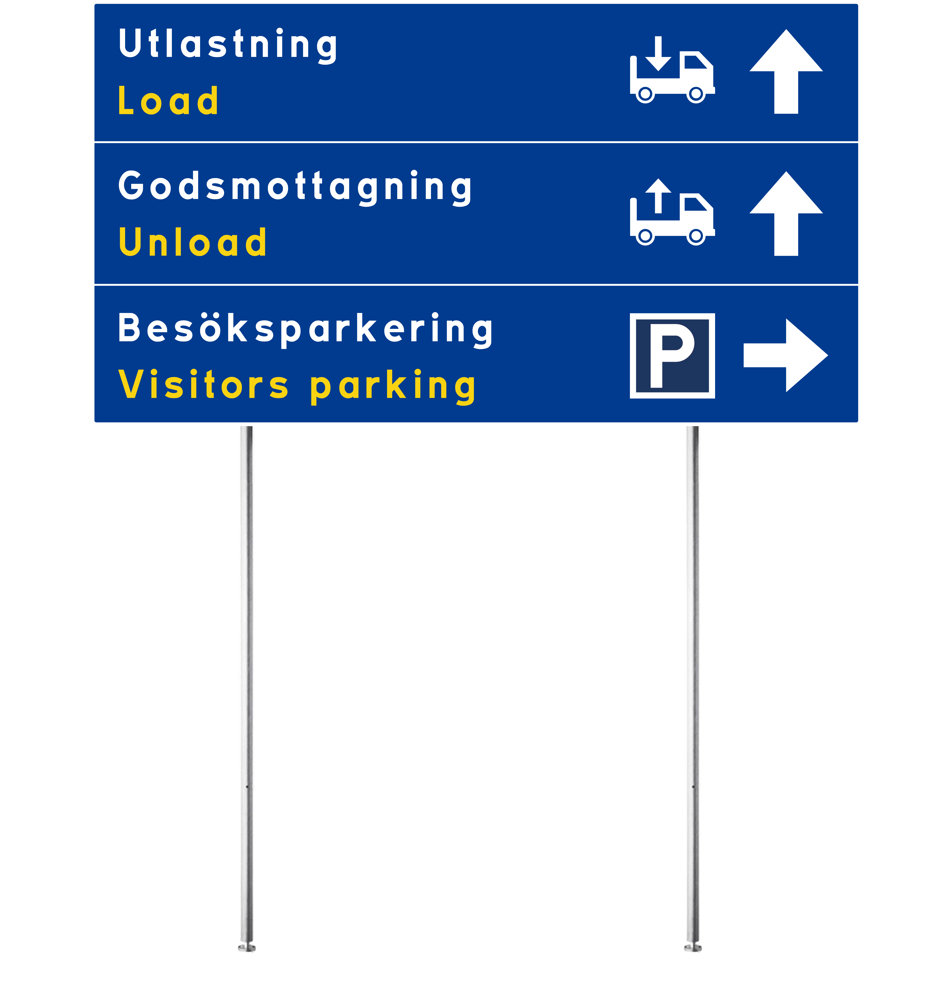

UX/UI Design
JOST Signage System
Redesign of JOST logistic signage system grounded in cognitive theories
Role
UX/UI Designer
UX Researcher
Timeline
2 months
Team
5 members
Tools
Figma
Industry
Agriculture
Year
2025
Problem Statement
JOST AB, a manufacturer of loaders for tractors and argiculturaral machinery, faced recurring issues with on-site navigation at their industrial logistics facility. Tryck drivers, often from various countries, frquently took wrong turns or arrived at incorrect loading docks, causing delays, confusion, and potential safety risks.
Complex Navigation
Signage needs to be clear and intuitive for an efficient navigation
Accessibility
Lack of accessibility regarding legibility and concern for non-native speakers
Inconsistent design
Inconsistent typography, hierarchy and iconography create confusion for drivers
Our solution
An intuitive signage system for every driver
The signage system is highly legible and accessible grounded in cognitive theories
Placement
Placements focused on clarity at each desicion point to minimize the risk of misunderstandings
High contrast
Colours that provide high contrast and comply with Web Content Accessibility Guidelines
Higly legible
Sign-size and font-size is calculated with degrees of visual angle, and SiS guidelines
Bilingual
All signs are bilingual making them accessible and understandable to non-native speakers
Design Process
A structured approach to understanding users and creating meaningful solutions
01 Research
Conducted background research and competetive analysis to understand user needs
- Meeting with stakeholders to understand regulations and limitations
- Visiting industry site to understand pain-points
- Research on related cognitive theoires
- SiS and ISO guidelines
- Conducted competetive analysis
- Measured distances in the industrial area to understand relations and positions
02 Ideation & Conceptualization
Brainstormed solutions focused on minimizing cognitive load while maximizing clarity. Key design strategies included:
- Simplifying information density
- Calculating font sizes and sign dimensions based on viewing distance and visual angle, using SiS guidelines
- Designing custom symbols for loading and unloadning areas, validated through user-testing with truck drivers
- Applying color-coded bilingual text layouts for clear language separation
- Creating a redesigned site map with simplified forms and strategically emphasized elements to support quick orientation and reinforce wayfinding through priming
03 Site Map
Redesigned site map that aligns with the color scheme on wayfinding signs
- Simplified forms focusing on waypoints and important areas
- Stretegically emphasized elements
- Colors connecting with arrows on wayfinding signs
04 New Design System
The final outcome delivered a fully redesigned sign system, including:
- A new easy to read sitemap
- Highly-legible and accessible wayfinding signs
- Positions for every sign with calculated sign-size and font-size based on viewing distance and visual angle
Easier Wayfinding or Higher Contrast?
Two different versions of the system were designed. One with white arrows, and one with arrows colored to match the wayfinding scheme on the sitemap. Each version has its advantages and drawbacks. The colored arrows enhance priming and make wayfinding easier by visually linking to the sitemap, while the white arrows offer better contrast and visibility.
White Arrows
Colored Arrows
Result
New signage system that is easy to navigate
The redesigned system is expected to significatly reduce navigation errors, minimize cognitive load and improve safety and efficiency for truck drivers and personnel. The project's design deliverables are directly ready for production.
Site Map
A new easy to read site map
Wayfinding Signs
Highly legible and accessible signs
Cognitive Theories
Backed by several cognitive theories
User Centered
The design decisions is made with users in mind